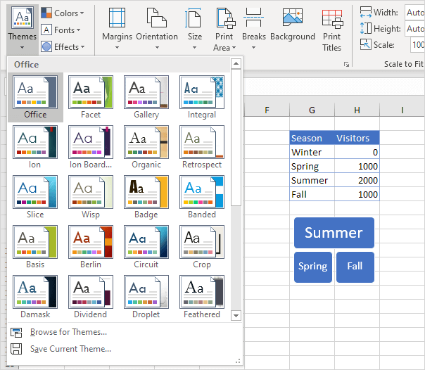
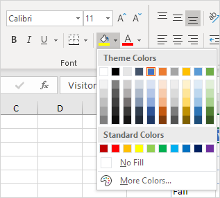
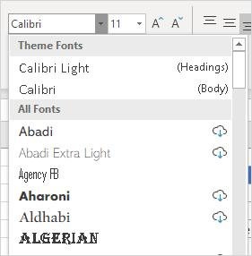
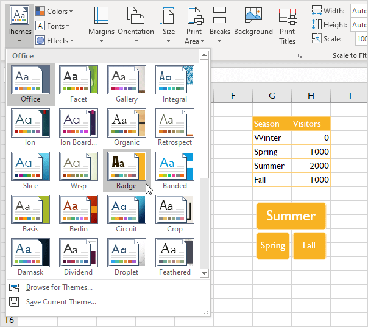
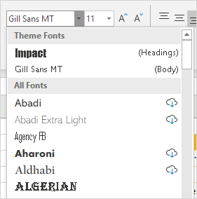
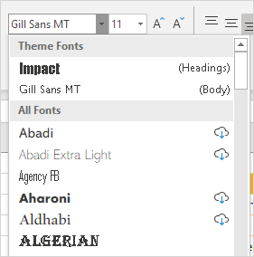

Excel menawarkan tema untuk mengubah tampilan buku kerja Anda dengan mengklik tombol. Setiap tema terdiri dari 12 warna, dua font (Headings dan Body) dan efek untuk bentuk dan SmartArt.
1. Pada tab Page Layout, di grup Themes, Anda dapat melihat bahwa lembar kerja di bawah ini menggunakan tema Office standar.

2. Pada tab Beranda, dalam grup Font, Anda dapat melihat Warna Tema dan Font Tema (Calibri Light dan Calibri) dari tema ini.
 
3. Pada tab Page Layout, di grup Themes, klik Themes dan pilih tema Badge.

4. Pada tab Beranda, di grup Font, Anda dapat melihat Warna Tema dan Font Tema (Impact dan Gill Sans MT) dari tema ini.
 

Catatan: pada tab Tata Letak Halaman, dalam grup Tema, klik Warna, Kustomisasi Warna untuk membuat warna tema baru atau klik Font, Kustomisasi Font untuk membuat font tema baru. Selanjutnya, klik Tema, Simpan Tema Saat Ini untuk menyimpan tema Anda di folder Tema Dokumen. Anda sekarang dapat menggunakan tema ini di semua buku kerja Anda. Anda bahkan dapat menggunakan tema ini di Word dan PowerPoint!